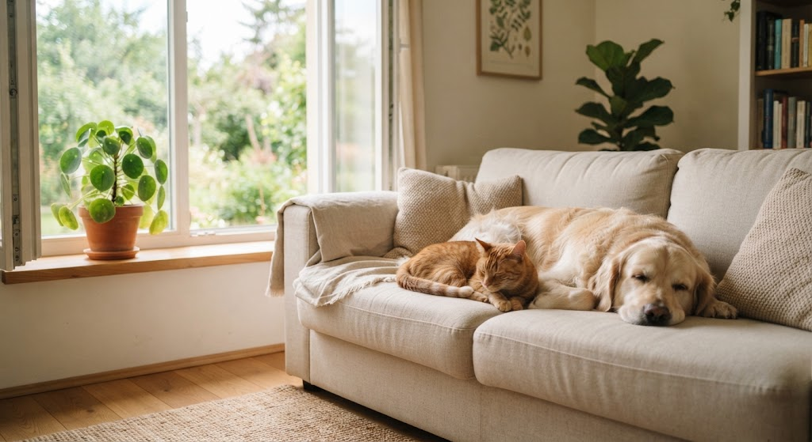

🌿 Lekce 29
jak bezpečně používat vůně, když máte doma zvíře
Zvířata vnímají vůně jinak než my a některé oleje pro ně nejsou bezpečné. Ukážu vám, jak používat vůně tak, aby se doma cítili dobře všichni.

Zvířata jsou menší a jejich tělo některé látky z olejů zpracovává jinak než naše. Kočkám chybí jaterní enzym, který pomáhá odbourávat určité složky olejů, a navíc se pořád olizují, takže snadno slíznou i kapénky, které se usadí na srsti. Ptáci mají mimořádně citlivé dýchací cesty. Rizikovější jsou také zvířata, která už mají potíže s dýcháním.
Neznamená to, že musíte přestat používat vůně. Jen je dobré vědět, kde je hranice.
Jsou nejcitlivější. Nejbezpečnější je difuzér v bytě s kočkou omezit nebo ho nepoužívat.
Tento nedostatek nemají, ale i pro ně mohou oleje být problém. Sledujte jejich chování.
Nejlepší je v jejich blízkosti nepoužívat vůně vůbec.
U hlodavců, králíků, plazů a akvarijních ryb nemám ověřené informace, takže bez porady s veterinářem bych v jejich blízkosti vůně nepoužívala.
V odborných zdrojích se jako rizikové uvádějí například tea tree, skořice, eukalyptus, cedr, šalvěj, libavka a bříza. Další zdroje uvádějí i citrusové oleje a mátu peprnou.
Tím ale neplatí, že ostatní oleje jsou bezpečné. Neexistuje seznam olejů, o kterých bychom to mohli jistě říct, proto se vždy zeptejte veterináře.
Difuzér zapínejte jen krátce, nejvýš na 30 minut. Více o difuzéru.
Nechte otevřené dveře, aby mohlo zvíře z místnosti odejít, a potom vyvětrejte.
Difuzér umístěte tak, aby na něj zvíře nedosáhlo a nemohlo ho převrhnout.
Používejte raději méně kapek.
Ultrazvukový difuzér vypouští drobné kapénky, které se mohou usadit na srsti nebo peří, takže ho pouštějte, když tam zvíře není.
Nenanášejte olej na srst ani kůži zvířete, ani zředěný, pokud vám to nedoporučil veterinář.
Nepodávejte ho zvířeti ústy.
Nepoužívejte na zvířeti přípravky určené lidem.
Lahvičky mějte mimo dosah zvířat.
Zvíře je neklidné, snaží se odejít z místnosti, kýchá, otírá si čumák, slintá, zvrací, je nezvykle unavené, špatně chodí, třese se nebo má potíže s dýcháním (kašle, chrapotá).
1. Difuzér ihned vypněte.
2. Zvíře dejte na čerstvý vzduch.
3. Okamžitě volejte veterináře.
4. Zvracení nevyvolávejte, hrozí vdechnutí zvratků.
5. Veterináři řekněte, o jaký olej šlo a jak bylo zvíře vystaveno.
Tato lekce nenahrazuje veterináře. Před jakýmkoli použitím olejů na zvířeti nebo v jeho blízkosti se s ním poraďte. Obecná pravidla bezpečného používání najdete v lekci Bezpečnost při používání, tipy na vůně do domova na stránce Přírodní vůně domova.
Zvířata, hlavně kočky a ptáci, jsou na oleje citlivější než my.
Difuzér jen krátce, větrat a nechat zvíře odejít.
Olej nikdy na zvíře a nikdy dovnitř.
Při jakýchkoli příznacích okamžitě k veterináři.
Poslední krok: Tím naše lekce končí — kam se vydat dál.